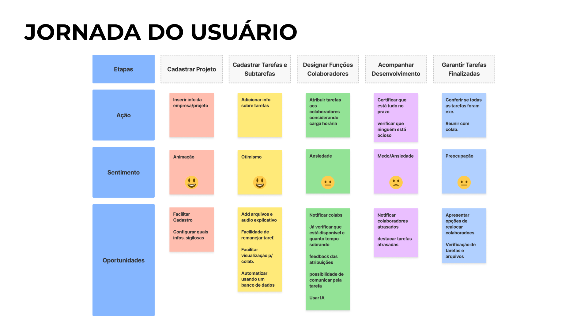

Pesquisa inicial
Comecei com uma matriz CSD, que me ajudou a organizar o que já sabia sobre o tema e minhas principais dúvidas.
A partir da matriz comecei um desk research buscando entender mais sobre o problema e abaixo destaco os principais achados.
- De acordo com o panorama das agências digitais 2021 feito pelo Rock Content, estruturar a operação e organizar processos foi considerado o maior desafio por 12% das agências.
- Outro dado apresentado pelo panorama é o uso dos relatórios de acompanhamento, que foi considerado por quase 19% das agências como um fator de retenção de clientes. Extrair relatórios direto do sistema parece ser um caminho interessante.
- De acordo com a pesquisa feita, as dores para gestores são conseguir cadastrar tarefas, ver quem está disponível e o prazo da tarefa.
- Foi mencionado que seria interessante uma forma rápida de ver todas as atividades, quem são os colaboradores, o que estão fazendo, o tempo de dedicação e quando irá entregar.
Analisei as principais ferramentas de gestão de projeto do mercado, Monday e Jira. Foi importante para entender o que era bem estabelecido, os padrões que elas seguem e funcionalidades. Alguns pontos que são importantes de serem destacados:
- Possuem bastante flexibilidade no layout, permitindo ao usuário escolher aquele que atende melhor sua necessidade.
- Interface minimalista.
- Facilidade de visualizar informações.
- Muitas funcionalidades.
- Já apresentam algum nível de automatização.
Criei uma jornada do usuário para explorar melhor as dores e encontrar oportunidades.
Rabiscoframes
Foram feitos alguns desenhos da solução pensada, como seriam os elementos da interface e suas interações.
Solução
A interface foi pensada para ser simples e minimalista, garantindo uma fácil identificação de elementos e informações importantes achadas durante desk research. Informações identificadas como não relevantes foram ocultadas, sendo acessadas por meio de interações pensadas com alguns elementos da interface.
A estrutura é composta por uma header, uma barra de ferramentas e os quadros. Os quadros foram pensados para funcionarem como widgets, podendo ser trocados para criar novos layouts.
Próximos Passos
- Validar o protótipo
- Extração de relatórios para uso interno e também para cliente.
- Criar telas de menus, pop-ups, tooltips, de configuração...
- Criar interface para os colaboradores.
- Pensar na possibilidade de automatizar processos usando IA, recomendando colaborador ocioso para tarefa ou preencher tarefas usando um banco de dados como referência por exemplo.
- Criar templates de quadros.